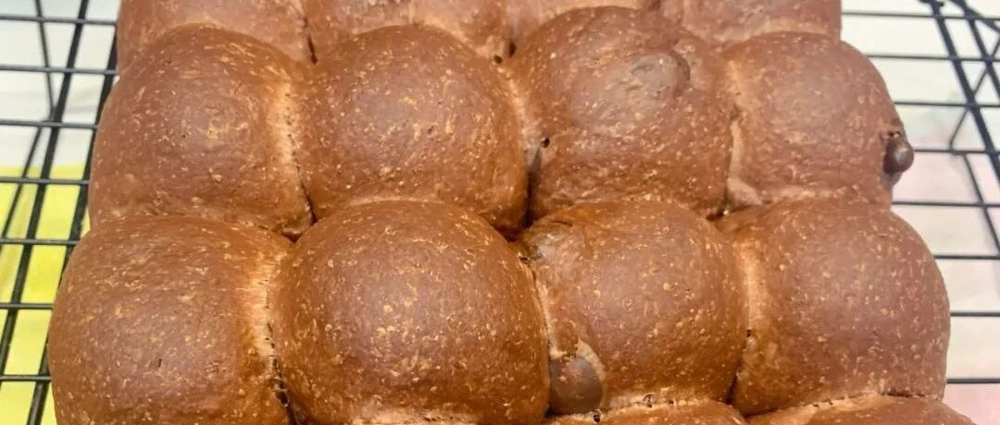

【视频】全麦巧克力排包
总是做吐司也要变变花样呀，今天做一个巧克力排包，觉得甜甜哒！
家里高筋粉没了，所以换了一半的全麦粉，也很好吃。如果不加全麦粉，那么面包会更加的软。先上方子哈。

这一次的视频，它它它横过来了！！！哈哈【感谢大家鼓励！】
现在用视频了，字数都到不了300个，再多啰嗦两句。中间少了一点揉小面包的。就这样吧。
目前和厨师机磨合的非常好了，一般就是3次搅打4分钟后，加入黄油，然后再搅打2次4分钟，视情况再加3分钟，就可以了。视频里把刮刀伸进去的行为是不可取的。我就是比较心急，其实等等也是差不多时间的。
这个巧克力豆呢，我觉得什么时候加都可以，一开始加进去也可，揉好了排气以后加也可。
关于水量，我强烈建议大家先加一半水。因为面粉不同，水量会有挺大差异的。我这次用的王后，感觉确实吸水。
还有同学在问二发的事情，就是除了温度32-35度，湿度也要够的，一碗持续热的热水是必不可少的。
组织超超超细腻。

全麦粉让人感觉负罪感没那么强吧。哈哈哈。

我双倍做的，另一半还是做了吐司。非常推荐。
小朋友们应该都会很喜欢吃吧。